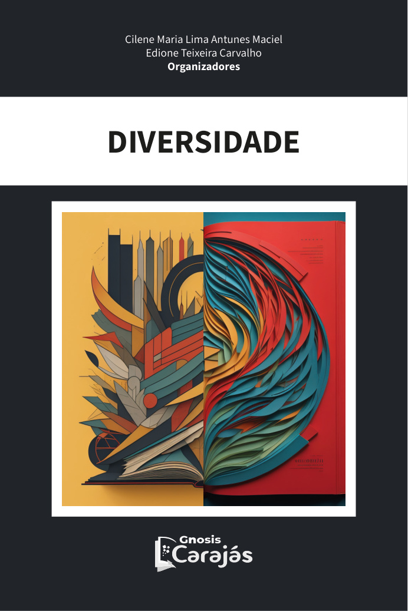

Modelo de livro digital
Arquivo editável para organização do manuscrito completo.
A Editora Gnosis Carajás atua na publicação e circulação de obras digitais de caráter científico, educacional, cultural e técnico, com organização editorial voltada à ampla difusão do conhecimento.

As publicações recentes evidenciam a atuação da editora na difusão de livros digitais, especialmente no campo da educação, do ensino de Ciências, da Matemática, das linguagens e da diversidade.
Uma editora voltada à publicação de livros digitais, coletâneas e anais de eventos em diferentes áreas do conhecimento.
A Editora Gnosis Carajás dedica-se à publicação de obras digitais voltadas à circulação qualificada de produções acadêmicas, científicas, educacionais, culturais e técnicas. Seu catálogo é organizado para favorecer a consulta pública, a identificação bibliográfica das publicações e o acesso de leitores, pesquisadores, professores e estudantes.
A proposta editorial valoriza livros digitais, coletâneas, obras organizadas e anais de eventos, com atenção à clareza das informações de autoria, organização, edição, ISBN e descrição das obras.
Lista de publicações digitais da Editora Gnosis Carajás, com identificação da modalidade editorial, capa, título, autoria ou organização, sinopse e dados bibliográficos. Todos os livros disponíveis no catálogo possuem botão de download em PDF.
Esta página reúne orientações para autores e organizadores interessados em submeter livros digitais, coletâneas e anais de eventos à Editora Gnosis Carajás.
Arquivo editável para organização do manuscrito completo.
Estrutura indicada para capítulos de coletâneas.
Orientações sobre formatação, autoria, referências e envio.
Orientações para organização de coletâneas e anais de eventos.
Este formulário está em modo visual. Para funcionar no GitHub Pages, recomenda-se integrar com FormSubmit, Google Forms ou outro serviço de formulário estático.
Use os canais de atendimento para dúvidas sobre catálogo, submissões, modelos, diretrizes editoriais e arquivos publicados.
Este formulário está em modo visual. Para receber mensagens, configure um serviço externo de formulários estáticos.